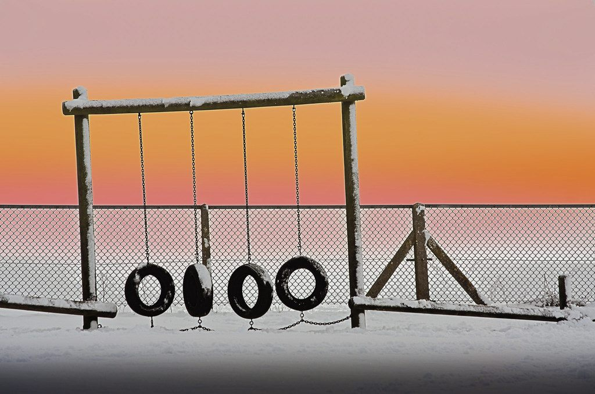
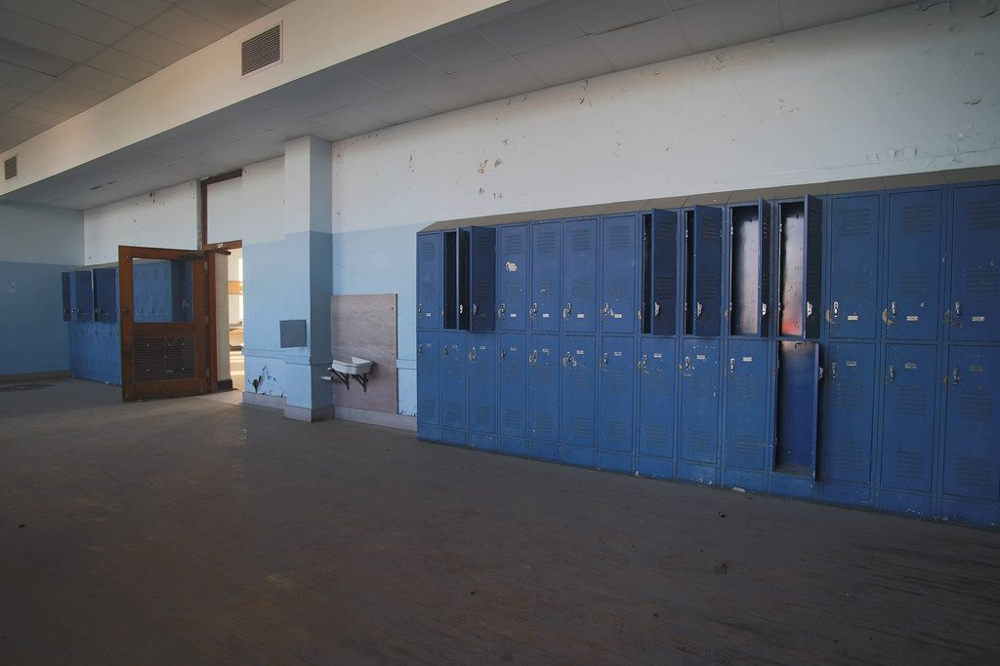
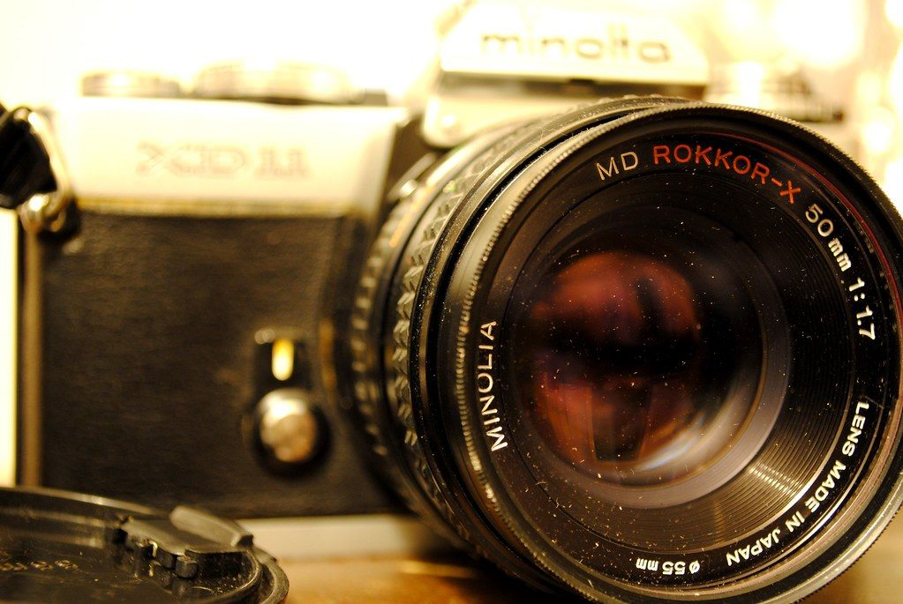
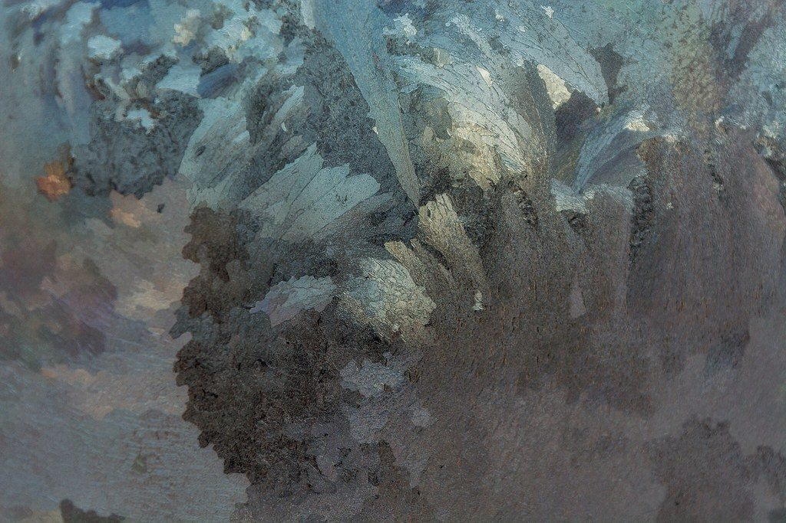
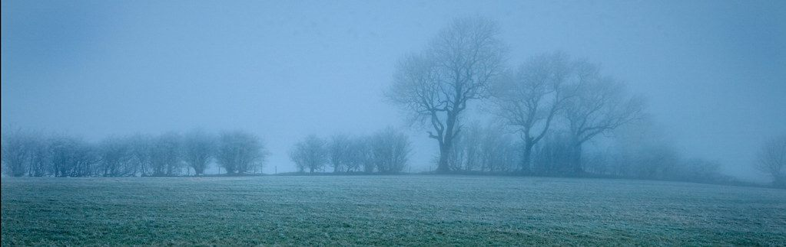
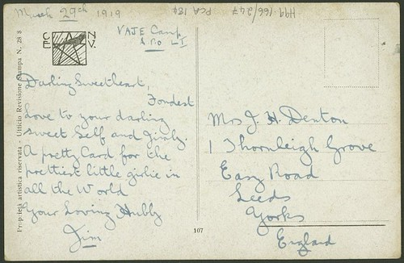
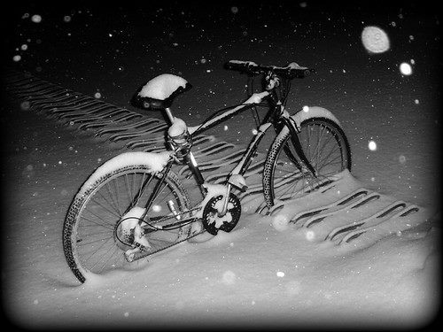

The way the light pooled on the desks at ten past three. We stayed until the caretaker started switching the lights off, one row at a time.
An unofficial fan archive
Winter Tape Club
Some memories feel like they happened yesterday. Others feel like a dream.
the collection
The Memory
Archive
Six tapes pulled from a shoebox under the bed. None of them are labelled properly. All of them are dated in someone's handwriting.
-
-
That particular blue that only turns up in winter. We named it after you and then forgot, and then remembered again months later.
-
Footsteps sound different when nobody else is there. The lockers held things we never said out loud.
-
Racing home before the streetlights came on. Cold air in our lungs, and the feeling that the whole evening belonged to us.
-
Nothing happened, which is exactly why it stayed. The last ordinary afternoon before everything quietly rearranged itself.
-
Words that stayed in our throats. Confessions written in the margins of a diary and never posted. Still here, somehow.
— six of forty-one. the rest are still in the box.
same tape, two readings
Side A / Side B
One side recorded it. The other side remembers it. They are not quite the same tape, even though the tape is the same.

Side A — the recording
We were only ever
filming forward.
The camera is heavy in your hands, and the strap leaves a mark on your wrist. You film the corridor because it is there, because the light is doing something you can't explain, because your friends are laughing two steps ahead and you want to keep the sound of it.
Nothing is a memory yet. This is just a Tuesday. The tape runs out in forty-seven minutes and you will forget all of it by spring.
- Recorded
- Dec 2022
- Format
- Hi8 / SP
- Runtime
- 47 min

Side B — the memory
The tape didn't change.
You did.
Everything has gone cold and quiet. The windows have frosted over until the outside world looks like a photograph of itself. You keep the tape paused on a single frame where someone is half-turned, about to say something.
You are watching yourself watch them. The distance between then and now is measured in how long you can hold the pause button before it starts to hurt.
- Viewed
- Dec 2025
- Format
- digital transfer
- Runtime
- indefinite
loose pages
The Dream
Board
Everything pinned to the wall above the desk. Nothing is finished, nothing is arranged, everything means something to someone.





In another version of this winter, we never left.
(this whole wall is a lie. i was never this sentimental.)
unsent
Letters to
the Past
Written on the back of receipts, inside book covers, in the last pages of a notebook. Never posted. Kept anyway.
Some days I wish I could rewind.
Dec 2023
We didn't know those moments would become memories.
Jan 2024
Maybe growing up just means learning how to miss things.
Feb 2024
Unsorted notes
press the key, see what comes up
the drawer is closed.